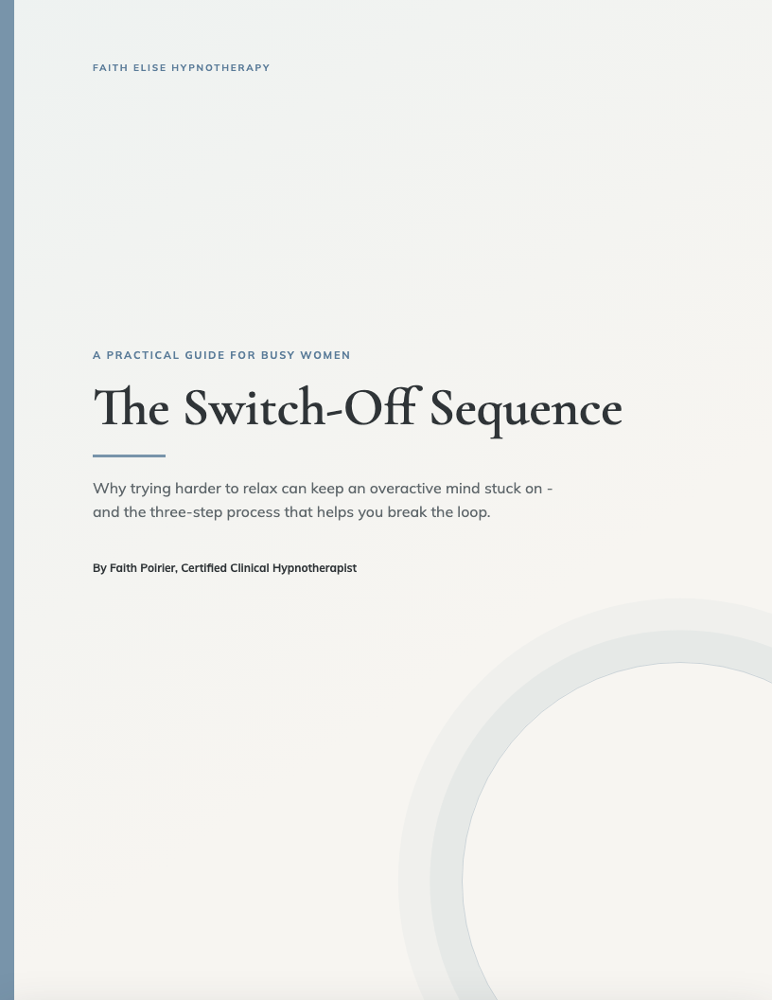

Uncover the Loop
Identify the thought, trigger, belief, or habit that keeps switching your mind back on. You leave with a clear target - not a vague instruction to simply relax.
For busy women whose minds will not switch off
The three-step hypnotherapy process that helps busy women quiet racing thoughts, break the overthinking loop, and feel calm in their own minds again - without meditating harder, thinking more positively, or spending months rehashing the same problem.
The three-step hypnotherapy process that helps busy women quiet racing thoughts at bedtime, break the overthinking loop, and finally rest - without meditating harder or adding another complicated nighttime routine.
The three-step hypnotherapy process that helps busy women quiet anxious thinking, break the loop that keeps the mind on alert, and feel steady again - without forcing themselves to think more positively or talk through the same problem for months.
Private, one-to-one sessions with a Certified Clinical Hypnotherapist - a three-step process that helps you quiet racing thoughts, break the overthinking loop, and feel calm in your own mind again, from your own comfortable space.
If overthinking were a choice
You spend the day answering messages, solving problems, remembering what everyone else needs, and holding everything together. Then the day finally ends.
Your body is tired, but your thoughts keep working. You replay what happened. Rewrite tomorrow's list. Search for the thing you forgot. Prepare for what could go wrong.
And the harder you try to relax, the more aware you become that you are not relaxing. Now rest is another problem to solve.
That does not mean you are bad at relaxing. It means the same automatic loop keeps switching your mind back on.
The mistake is trying to outthink overthinking.

Why the usual advice falls short
Most advice asks you to manage overthinking from the same conscious mind that is already exhausted.
You know you need rest. You know the thought is not helping. You know replaying the conversation again will not change what happened. The problem is not that you need more information.
Faith's approach helps you identify the loop, work with the automatic response beneath it, and reinforce a calmer pattern in everyday life.
The Switch-Off Sequence
For the mind that stays alert after the day is over.
Identify the thought, trigger, belief, or habit that keeps switching your mind back on. You leave with a clear target - not a vague instruction to simply relax.
Targeted hypnotherapy, guided imagery, reframing, and suggestion help your mind rehearse a different response while you are calm, focused, and receptive.
Bring the work into real life with simple tools that help you return to calm when the old loop tries to restart.
Uncover the loop. Repattern the response. Reinforce the calm.
See the process more clearly
Watch Faith walk through why arguing with each thought keeps the loop running - and what changing the loop underneath it actually looks like in a session.
Get the Free GuideWhat you may begin to notice
What clients are saying
“Before working with Faith, I could not get to bed before 2:00 a.m. most nights - my mind would not shut off. After our sessions, I started getting to sleep around 11:00 p.m. I felt calmer at night and had practical tools I could use when my mind started racing.”
“I looked confident on the outside, but inside I was always second-guessing myself and feeling like I did not really belong. Faith helped me understand that some of those thoughts were old beliefs, not facts. I started feeling more capable and secure.”
“Each session left me feeling lighter and more aligned. I am so grateful and highly recommend her.”

Free guide - sent straight to you
A short guide to the three loops that keep a busy mind working after the day is over - and the three-step process for practicing a calmer response.
PDF. Opens on any phone, tablet, or computer.
Why work with Faith?
Faith Poirier combines honest conversation with targeted techniques and simple take-home tools.
Her work may include CBT-based hypnotherapy, guided imagery, NLP, EFT tapping, reframing, and suggestions built around your own language, goals, and experience.

You remain in control
Nothing is done to you. You agree on the goal first, and the process is collaborative from beginning to end.
Start with a free 15-minute call
Start with a free, confidential conversation with Faith.
Free. 15 minutes. Private. No obligation.
If you decide to continue
Faith takes the time to understand what keeps happening, what you want instead, and which pattern needs to change first. The hypnotherapy is then built around your language, goals, and experience.
Continue with focused 50-minute sessions, or choose a structured session journey for more consistent support. You and Faith decide the right pace together - there is no pressure to commit during the consultation.
Frequently asked questions
You do not need to arrive with a quiet mind. Faith guides the process step by step, and you remain awake, aware, and in control throughout.
Conversation helps identify the pattern. Hypnotherapy gives you a calm, focused space to practice a different response instead of only explaining the old one.
No. You remain aware and in control. You choose what you want to discuss and can pause or stop at any time.
Sessions are private, one-to-one, and built around your own language, goals, and experience. You only need a quiet, comfortable place where you will not be interrupted.
That is exactly what the free call is for. Talk through what is happening, ask your questions, and decide without pressure.
Stop carrying the day into bed
Start with the loop underneath it. Private virtual sessions are available throughout the United States.
Book Your Free 15-Minute CallFree. Private. No pressure. No obligation.